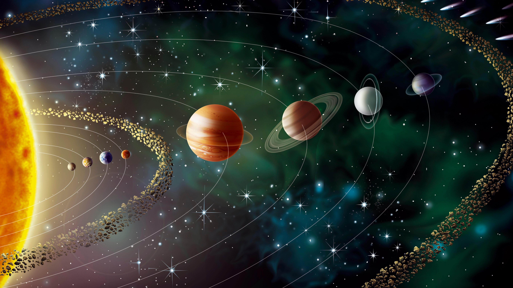
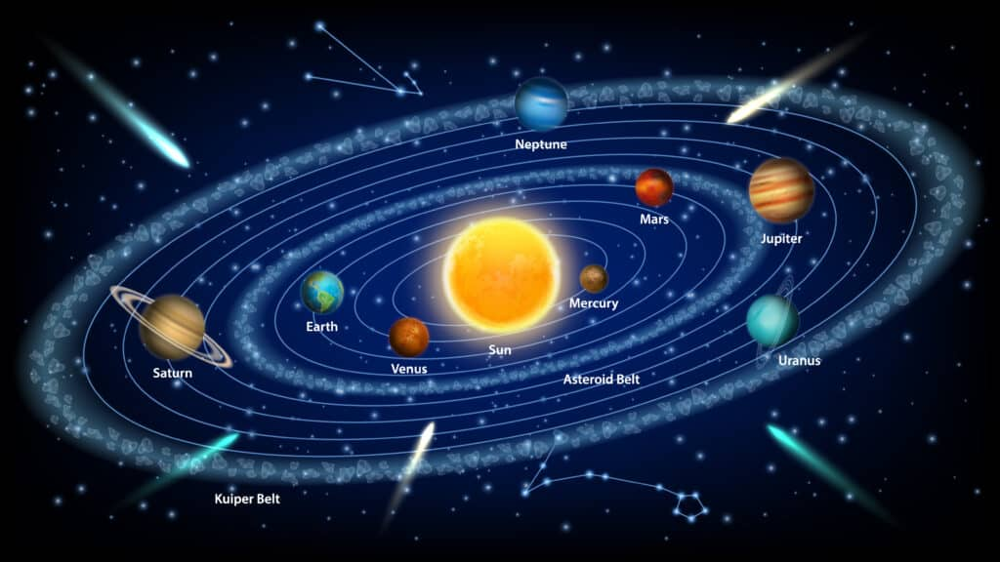

What the Solar System is?


The Solar System is the gravitationally bound system of the Sun and the objects that orbit it.
Our solar system formed about 4.5 billion years ago from a dense cloud of interstellar gas and dust.
The solar system extends from the sun, goes past the four inner planets, through the asteroid belt to the four gas giants and on to the disk-shaped Kuiper Belt and far beyond to the teardrop-shaped heliopause.
Scientists estimate that the edge of the solar system is about 9 billion miles (15 billion kilometers) from the sun. Beyond the heliopause lies the giant, spherical Oort Cloud, which is thought to surround the solar system.
What our Solar System consists of?
- one star - the Sun
- eight planets
- five officially recognized dwarf planets
- at least 290 moons
- more than 1.3 million asteroids
- about 3,900 comets
Eight planets are:
- Mercury
- Venus
- Earth
- Mars
- Jupiter
- Saturn
- Uranus
- Neptune